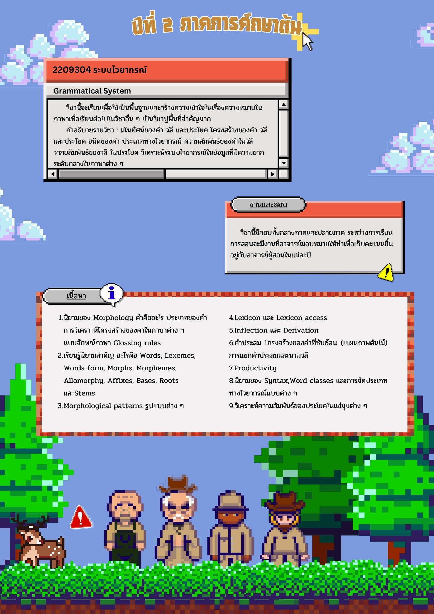

LangTech OpenHouse 2024

Langtech Openhouse 2024: Design Team
"ข้าว" เป็นผลผลิตทางการเกษตรที่สำคัญเป็นอันดับต้น ๆ ของไทย ประเทศของเราเป็นที่รู้จักกันดีในฐานะอู่ข้าวชั้นเลิศที่นอกจากจะมีข้าวมากมายหลากหลายสายพันธุ์ เช่น ช้าวหอมมะลิ ข้าวสังข์หยด ข้าวไรซ์เบอร์รี ข้าวเหนียวเขี้ยวงู
เรายังมีการพัฒนาและปรับปรุงคุณภาพของข้าวเพื่อให้เกิดผลผลิตที่ดีที่สุดออกมาให้ชาวไทยและชาวต่างชาติได้รู้จัก
อย่างไรก็ตามเกษตรกรผู้ปลูกข้าวกลับไม่ได้รับผลตอบแทนของการทำงานได้มากเท่าที่ควร ปัญหาวิกฤตราคาข้าวตกต่ำที่เป็นปัญหาเรื้อรังมานานทำให้เกษตรกรไม่สามารถคืนทุนได้จากการลงแรงเพาะปลูก ทั้งยังเหลือข้าวเป็นจำนวนมากที่คงค้างในโรง เกิดเป็นปัญหาอื่น ๆ ตามมา
พวกเราจึงได้เลือกข้าวมาพัฒนาเป็นผลิตภัณฑ์ทางการเกษตร


×